Neo Geo
119 juegos, 0 probados en la bartop
Género
Jugadores
Década
119 juegos
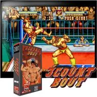
Nº 13 Count Bout Nº 2Aero Fighters 2 / Sonic Wings 2
Nº 2Aero Fighters 2 / Sonic Wings 2 Nº 3Aero Fighters 3
Nº 3Aero Fighters 3 Nº 4Aggressors of Dark Kombat
Nº 4Aggressors of Dark Kombat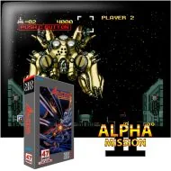
Nº 5Alpha Mission II - Last Guardian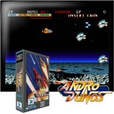
Nº 6Andro Dunos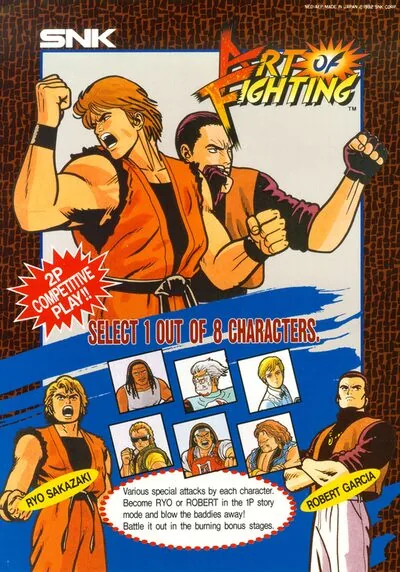
Nº 7Art of Fighting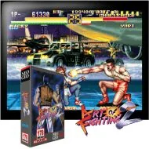
Nº 8Art of Fighting 2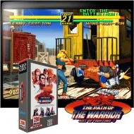
Nº 9Art of Fighting 3 - The Path of the Warrior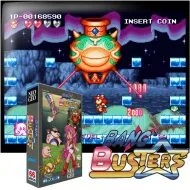
Nº 10Bang Bang Busters Nº 11Bang Bead
Nº 11Bang Bead Nº 12Battle Flip Shot
Nº 12Battle Flip Shot Nº 13Blazing Star
Nº 13Blazing Star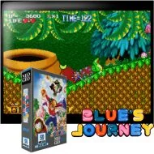
Nº 14Blue's Journey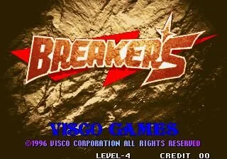
Nº 15Breakers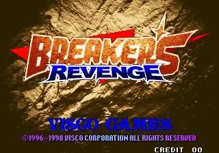
Nº 16Breakers Revenge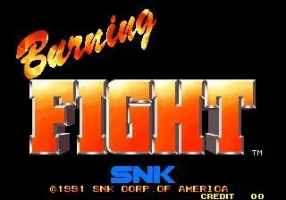
Nº 17Burning Fight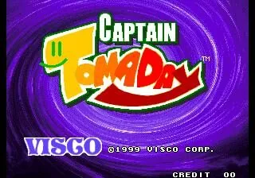
Nº 18Captain Tomaday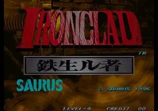
Nº 19Choutetsu Brikin'ger - Iron Clad (prototype)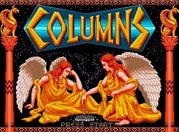
Nº 20Columns Nº 21Crossed Swords
Nº 21Crossed Swords Nº 22Crossed Swords 2 (bootleg of CD version)
Nº 22Crossed Swords 2 (bootleg of CD version) Nº 23Crouching Pony Hidden Dragon
Nº 23Crouching Pony Hidden Dragon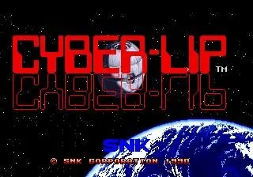
Nº 24Cyber-Lip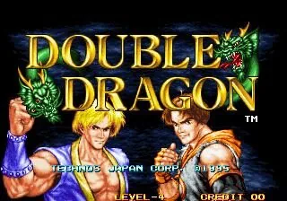
Nº 25Double Dragon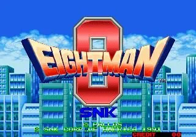
Nº 26Eight Man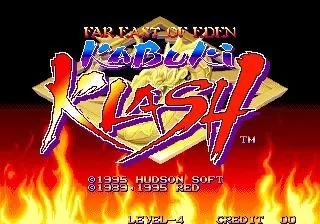
Nº 27Far East of Eden - Kabuki Klash / Tengai Makyou - Shin Den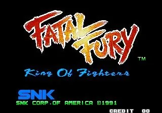
Nº 28Fatal Fury - King of Fighters Nº 29Fatal Fury 2
Nº 29Fatal Fury 2 Nº 30Fatal Fury 3 - Road to the Final Victory
Nº 30Fatal Fury 3 - Road to the Final Victory Nº 31Fatal Fury Special
Nº 31Fatal Fury Special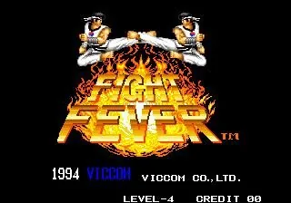
Nº 32Fight Fever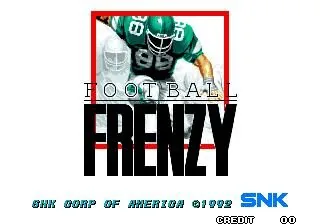
Nº 34Football Frenzy (NGM-034 ~ NGH-034)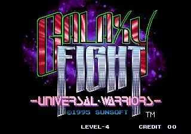
Nº 35Galaxy Fight - Universal Warriors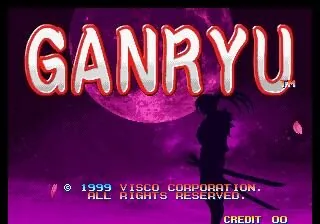
Nº 36Ganryu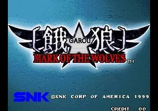
Nº 37Garou - Mark of the Wolves (NGM-2530)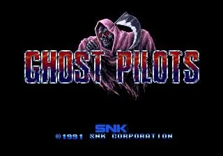
Nº 38Ghost Pilots (NGM-020 ~ NGH-020)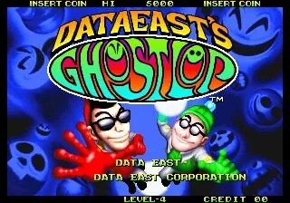
Nº 39Ghostlop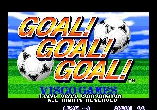
Nº 40Goal! Goal! Goal!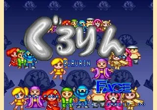
Nº 41Gururin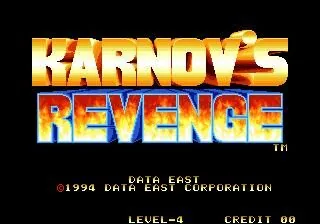
Nº 42Karnov's Revenge / Fighter's History Dynamite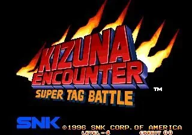
Nº 47Kizuna Encounter - Super Tag Battle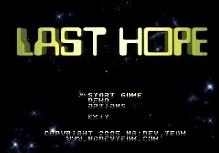
Nº 48Last Hope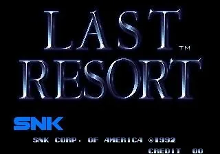
Nº 49Last Resort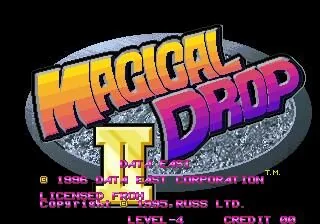
Nº 50Magical Drop II Nº 51Magical Drop III
Nº 51Magical Drop III Nº 52Magician Lord
Nº 52Magician Lord Nº 53Matrimelee
Nº 53Matrimelee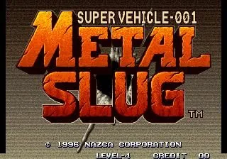
Nº 54Metal Slug - Super Vehicle-001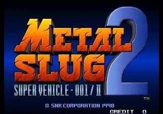
Nº 55Metal Slug 2 - Super Vehicle-001/II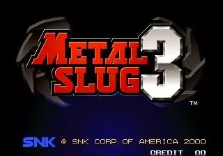
Nº 56Metal Slug 3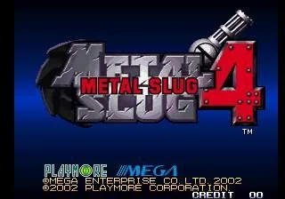
Nº 57Metal Slug 4 (NGM-2630)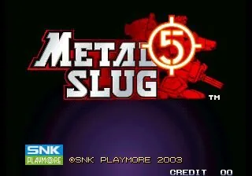
Nº 58Metal Slug 5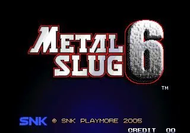
Nº 59Metal Slug 6 (Metal Slug 3 bootleg)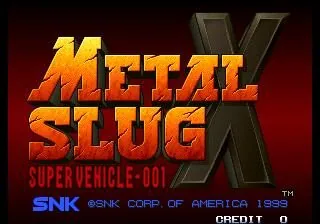
Nº 60Metal Slug X - Super Vehicle-001 (NGM-2500 ~ NGH-2500)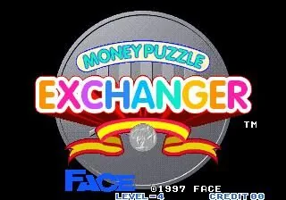
Nº 62Money Puzzle Exchanger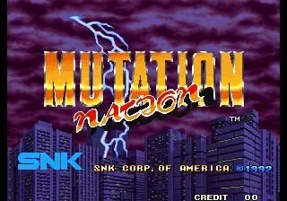
Nº 63Mutation Nation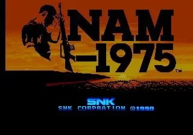
Nº 64NAM-1975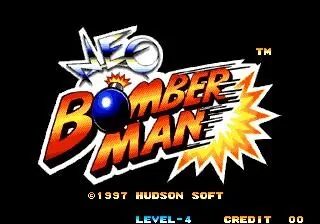
Nº 65Neo Bomberman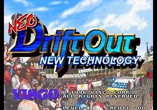
Nº 66Neo Drift Out - New Technology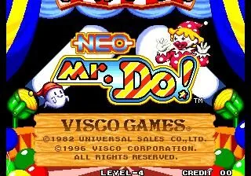
Nº 67Neo Mr. Do!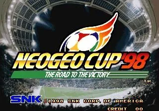
Nº 68Neo-Geo Cup '98 - The Road to the Victory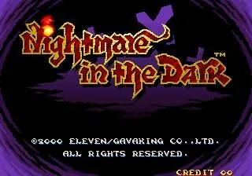
Nº 70Nightmare in the Dark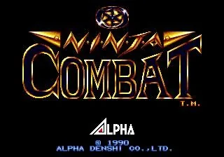
Nº 71Ninja Combat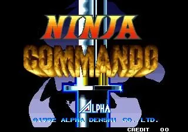
Nº 72Ninja Commando- Nº 73Ninja Master's
- Nº 74Over Top
- Nº 75Panic Bomber
- Nº 79Pleasure Goal / Futsal - 5 on 5 Mini Soccer (NGM-219)
- Nº 80Pop 'n Bounce
- Nº 81Power Spikes II
- Nº 82Prehistoric Isle 2
- Nº 83Pulstar
- Nº 84Puzzle Bobble / Bust-A-Move (Neo-Geo, NGM-083)
- Nº 85Puzzle Bobble 2
- Nº 86Puzzle De Pon!
- Nº 87Rage of the Dragons
- Nº 88Ragnagard
 Nº 89Rail Chase
Nº 89Rail Chase- Nº 90Real Bout Fatal Fury
- Nº 91Real Bout Fatal Fury 2 - The Newcomers
- Nº 92Real Bout Fatal Fury Special
- Nº 93Riding Hero
- Nº 94Robo Army
- Nº 95Samurai Shodown
- Nº 96Samurai Shodown II
- Nº 97Samurai Shodown III
- Nº 98Samurai Shodown IV - Amakusa's Revenge
- Nº 99Samurai Shodown V
- Nº 100Samurai Shodown V Special / Samurai Spirits Zero Special (NGM-2720)
- Nº 101Savage Reign / Fu'un Mokushiroku - Kakutou Sousei
- Nº 102Sengoku
- Nº 103Sengoku 2 / Sengoku Denshou 2
- Nº 104Sengoku 3
- Nº 105Shock Troopers
- Nº 106Shock Troopers - 2nd Squad
- Nº 107SNK vs. Capcom - SVC Chaos
- Nº 108SNK vs. Capcom - SVC Chaos Plus
- Nº 109SNK vs. Capcom - SVC Chaos Super Plus (bootleg)
- Nº 110Soccer Brawl
- Nº 111Spin Master
- Nº 112Street Hoop
- Nº 113Strikers 1945
- Nº 114Super Dodge Ball
- Nº 115Super Sidekicks
- Nº 116Super Sidekicks 2 - The World Championship
- Nº 117Super Sidekicks 3 - The Next Glory
- Nº 118Tecmo World Soccer '96
- Nº 119The Irritating Maze / Ultra Denryu Iraira Bou
- Nº 120The King of Fighters '94
- Nº 121The King of Fighters '95
- Nº 122The King of Fighters '96
- Nº 123The King of Fighters '97
 Nº 124The King of Fighters '98 - The Slugfest
Nº 124The King of Fighters '98 - The Slugfest Nº 125The King of Fighters '99 - Millennium Battle
Nº 125The King of Fighters '99 - Millennium Battle- Nº 46The King of Fighters 10th Anniversary 2005 Unique
- Nº 43The King of Fighters 2001 Plus
- Nº 44The King of Fighters 2002 Super
- Nº 45The King of Fighters Special Edition 2004 Plus
No hay juegos con esos filtros.